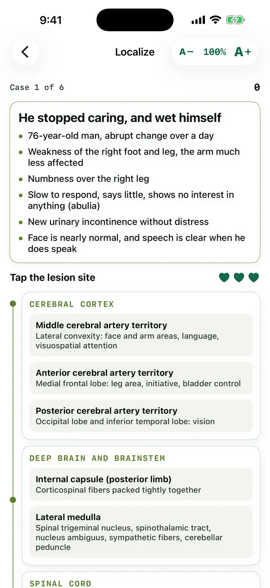

MedForge / Apps / Neuro Localizer
Neurologic · Lesion plate
Neuro Localizer
Where is the lesion?
Cases from stroke territories to spinal cord syndromes and nerve palsies. Read the findings, reason through the tracts, and tap the lesion site on the neuraxis plate.
Free preview: three cases. Unlock the full library. $2.99/month or $19.99/year
Live demo of Neuro Localizer
Try it: where is the lesion?
Read the findings, open a region and tap the site. Wrong taps give a teaching hint.
In the app
A real screen from Neuro Localizer
From the iPhone app, in a pre-release build. The Android app follows the same design, and the text size can be changed from 40% to 300% on every screen.

Sources
Every fact in this app is cited
These are the references this app draws on. Inside the app, each answer links to its source in a reading window that keeps your place.
- Bell's PalsyNational Library of Medicine, MedlinePlus · NIH / NLM MedlinePlus
- Carpal Tunnel SyndromeNational Library of Medicine, MedlinePlus · NIH / NLM MedlinePlus
- Mononeuropathy (encyclopedia)National Library of Medicine, MedlinePlus · NIH / NLM MedlinePlus
- Common peroneal nerve dysfunction (encyclopedia)National Library of Medicine, MedlinePlus · NIH / NLM MedlinePlus
- Spinal cord trauma (encyclopedia)National Library of Medicine, MedlinePlus · NIH / NLM MedlinePlus
- Stroke (encyclopedia)National Library of Medicine, MedlinePlus · NIH / NLM MedlinePlus
- Stroke and TIA in over 16s (NG128)National Institute for Health and Care Excellence (NICE) · NICE (UK)
- Bell's PalsyNational Institute of Neurological Disorders and Stroke (NIH) · NINDS / NIH
- Brown-Sequard SyndromeNational Institute of Neurological Disorders and Stroke (NIH) · NINDS / NIH
- Spinal Cord InjuryNational Institute of Neurological Disorders and Stroke (NIH) · NINDS / NIH
- StrokeNational Institute of Neurological Disorders and Stroke (NIH) · NINDS / NIH
- Spinal Cord DiseasesNational Library of Medicine, MedlinePlus · NIH / NLM MedlinePlus
- SyringomyeliaNational Library of Medicine, MedlinePlus · NIH / NLM MedlinePlus
- AphasiaNational Health Service (England) · NHS (UK)
- Carpal tunnel syndromeNational Health Service (England) · NHS (UK)
- ShinglesNational Health Service (England) · NHS (UK)
- Symptoms of a strokeNational Health Service (England) · NHS (UK)
- AphasiaNational Institute on Deafness and Other Communication Disorders (NIH) · NIDCD / NIH
- SyringomyeliaNational Institute of Neurological Disorders and Stroke (NIH) · NINDS / NIH
- Lateral Medullary Syndrome (Wallenberg's syndrome)National Institute of Neurological Disorders and Stroke (NIH) · NINDS / NIH
- Secondary Gerstmann syndrome, a case reportPubMed Central · Peer-reviewed study (PMC)
- AlexiaStatPearls Publishing, National Library of Medicine (NCBI Bookshelf) · NIH / NLM
- Gerstmann SyndromeStatPearls Publishing, National Library of Medicine (NCBI Bookshelf) · NIH / NLM
- Humerus Fractures OverviewStatPearls Publishing, National Library of Medicine (NCBI Bookshelf) · NIH / NLM
- Median Nerve InjuryStatPearls Publishing, National Library of Medicine (NCBI Bookshelf) · NIH / NLM
- Spatial NeglectStatPearls Publishing, National Library of Medicine (NCBI Bookshelf) · NIH / NLM
- Ramsay Hunt SyndromeStatPearls Publishing, National Library of Medicine (NCBI Bookshelf) · NIH / NLM
- Spinal Cord CompressionStatPearls Publishing, National Library of Medicine (NCBI Bookshelf) · NIH / NLM
- SyringomyeliaStatPearls Publishing, National Library of Medicine (NCBI Bookshelf) · NIH / NLM
- Vertebral Artery DissectionStatPearls Publishing, National Library of Medicine (NCBI Bookshelf) · NIH / NLM
- Wernicke AphasiaStatPearls Publishing, National Library of Medicine (NCBI Bookshelf) · NIH / NLM
- Brachial Plexus InjuriesNational Library of Medicine, MedlinePlus · NIH / NLM (MedlinePlus)
- Myasthenia GravisNational Library of Medicine, MedlinePlus · NIH / NLM (MedlinePlus)
- Pituitary TumorNational Library of Medicine, MedlinePlus · NIH / NLM (MedlinePlus)
- AtaxiaNational Health Service (England) · NHS (UK)
- Foot dropNational Health Service (England) · NHS (UK)
- Myasthenia gravisNational Health Service (England) · NHS (UK)
- SciaticaNational Health Service (England) · NHS (UK)
- AtaxiaNational Institute of Neurological Disorders and Stroke (NIH) · NINDS / NIH
- Brachial Plexus InjuryNational Institute of Neurological Disorders and Stroke (NIH) · NINDS / NIH
- Locked-In SyndromeNational Institute of Neurological Disorders and Stroke (NIH) · NINDS / NIH
- Myasthenia GravisNational Institute of Neurological Disorders and Stroke (NIH) · NINDS / NIH
- Pituitary TumorsNational Institute of Neurological Disorders and Stroke (NIH) · NINDS / NIH
- 14.2 Central Processing (Anatomy and Physiology 2e)OpenStax (Rice University) · OpenStax
- 13.2 The Central Nervous System (Anatomy and Physiology 2e)OpenStax (Rice University) · OpenStax
- 12.5 Communication Between Neurons (Anatomy and Physiology 2e)OpenStax (Rice University) · OpenStax
- Cauda Equina Syndrome: A Narrative Review Exploring the Pathophysiology, Clinical Spectrum, Diagnostic Strategies, and Time-Critical ManagementPubMed Central (open-access article) · PMC peer-reviewed article
- High-Riding Conus Medullaris Syndrome: A Case Report and Literature Review, Its Comparison with Cauda Equina SyndromePubMed Central (open-access article) · PMC peer-reviewed article
- Rare case of atypical Dejerine syndrome in a childPubMed Central (open-access article) · PMC peer-reviewed article
- Lambert-Eaton Myasthenic Syndrome in Lung CancerPubMed Central (open-access article) · PMC peer-reviewed article
- Vertebrobasilar artery dissection manifesting as Millard-Gubler syndrome in a young ischemic stroke patient: a case reportPubMed Central (open-access article) · PMC peer-reviewed article
- Understanding Parinaud's SyndromePubMed Central (open-access article) · PMC peer-reviewed article
- The Management of Poststroke Thalamic Pain: Update in Clinical PracticePubMed Central (open-access article) · PMC peer-reviewed article
- Clinical presentation of vertebrobasilar strokePubMed Central (open-access article) · PMC peer-reviewed article
- Superior alternating hemiplegia (Weber's syndrome): case reportPubMed Central (open-access article) · PMC peer-reviewed article
- Basilar Artery OcclusionStatPearls Publishing, National Library of Medicine (NCBI Bookshelf) · NIH / NLM
- Neuroanatomy, Bitemporal HemianopsiaStatPearls Publishing, National Library of Medicine (NCBI Bookshelf) · NIH / NLM
- Cauda Equina and Conus Medullaris SyndromesStatPearls Publishing, National Library of Medicine (NCBI Bookshelf) · NIH / NLM
- Cerebellar DysfunctionStatPearls Publishing, National Library of Medicine (NCBI Bookshelf) · NIH / NLM
- Cerebellar InfarctionStatPearls Publishing, National Library of Medicine (NCBI Bookshelf) · NIH / NLM
- Neuroanatomy, CerebellumStatPearls Publishing, National Library of Medicine (NCBI Bookshelf) · NIH / NLM
- Dejerine-Roussy SyndromeStatPearls Publishing, National Library of Medicine (NCBI Bookshelf) · NIH / NLM
- Erb PalsyStatPearls Publishing, National Library of Medicine (NCBI Bookshelf) · NIH / NLM
- Foot DropStatPearls Publishing, National Library of Medicine (NCBI Bookshelf) · NIH / NLM
- Klumpke PalsyStatPearls Publishing, National Library of Medicine (NCBI Bookshelf) · NIH / NLM
- Lambert-Eaton Myasthenic SyndromeStatPearls Publishing, National Library of Medicine (NCBI Bookshelf) · NIH / NLM
- Locked-in SyndromeStatPearls Publishing, National Library of Medicine (NCBI Bookshelf) · NIH / NLM
- Medial Medullary SyndromeStatPearls Publishing, National Library of Medicine (NCBI Bookshelf) · NIH / NLM
- Myasthenia GravisStatPearls Publishing, National Library of Medicine (NCBI Bookshelf) · NIH / NLM
- Millard-Gubler SyndromeStatPearls Publishing, National Library of Medicine (NCBI Bookshelf) · NIH / NLM
- Parinaud SyndromeStatPearls Publishing, National Library of Medicine (NCBI Bookshelf) · NIH / NLM
- Pituitary AdenomaStatPearls Publishing, National Library of Medicine (NCBI Bookshelf) · NIH / NLM
- Thalamic Pain SyndromeStatPearls Publishing, National Library of Medicine (NCBI Bookshelf) · NIH / NLM
- Weber SyndromeStatPearls Publishing, National Library of Medicine (NCBI Bookshelf) · NIH / NLM
- Management of Acute Traumatic Central Cord Syndrome: A Narrative ReviewPubMed Central · Peer-reviewed review (PMC)
- Evaluation and treatment of peroneal neuropathyPubMed Central · Peer-reviewed review (PMC)
- Clinical Features of Wrist Drop Caused by Compressive Radial Neuropathy and Its Anatomical ConsiderationsPubMed Central · Peer-reviewed study (PMC)
- A Prospective Profile of Visual Field Loss following Stroke: Prevalence, Type, Rehabilitation, and OutcomePubMed Central · Peer-reviewed study (PMC)
- Anterior Cerebral Artery StrokeStatPearls Publishing, National Library of Medicine (NCBI Bookshelf) · NIH / NLM
- Anterior Cord Syndrome (Ventral Cord Syndrome)StatPearls Publishing, National Library of Medicine (NCBI Bookshelf) · NIH / NLM
- Bell PalsyStatPearls Publishing, National Library of Medicine (NCBI Bookshelf) · NIH / NLM
- Brown-Séquard SyndromeStatPearls Publishing, National Library of Medicine (NCBI Bookshelf) · NIH / NLM
- Carpal Tunnel SyndromeStatPearls Publishing, National Library of Medicine (NCBI Bookshelf) · NIH / NLM
- Central Cord SyndromeStatPearls Publishing, National Library of Medicine (NCBI Bookshelf) · NIH / NLM
- Foot DropStatPearls Publishing, National Library of Medicine (NCBI Bookshelf) · NIH / NLM
- Horner SyndromeStatPearls Publishing, National Library of Medicine (NCBI Bookshelf) · NIH / NLM
- Neuroanatomy, Internal CapsuleStatPearls Publishing, National Library of Medicine (NCBI Bookshelf) · NIH / NLM
- Lacunar StrokeStatPearls Publishing, National Library of Medicine (NCBI Bookshelf) · NIH / NLM
- Lateral Medullary Syndrome (Wallenberg Syndrome)StatPearls Publishing, National Library of Medicine (NCBI Bookshelf) · NIH / NLM
- Neuroanatomy, Lower Motor Neuron LesionStatPearls Publishing, National Library of Medicine (NCBI Bookshelf) · NIH / NLM
- Middle Cerebral Artery StrokeStatPearls Publishing, National Library of Medicine (NCBI Bookshelf) · NIH / NLM
- Posterior Cerebral Artery StrokeStatPearls Publishing, National Library of Medicine (NCBI Bookshelf) · NIH / NLM
- Peroneal Nerve InjuryStatPearls Publishing, National Library of Medicine (NCBI Bookshelf) · NIH / NLM
- Radial Nerve InjuryStatPearls Publishing, National Library of Medicine (NCBI Bookshelf) · NIH / NLM
- Neuroanatomy, Upper Motor Neuron SignsStatPearls Publishing, National Library of Medicine (NCBI Bookshelf) · NIH / NLM